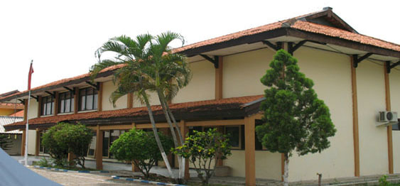

Profil Dinas

Berdasarkan Peraturan Daerah Kabupaten Tanjung Bonai Aur Nomor : 4 Tahun 2008 Tentang
Susunan Organisasi dan Tata Kerja Lembaga Teknis Daerah Kabupaten Tanjung Bonai Aur
Yang Selanjutnya Dijabarkan Kedalam Peraturan Bupati Tanjung Bonai Aur Nomor :
29 Tahun 2008 Tentang Rincian Tugas, Fungsi dan Tata Kerja Dinas Kependudukan
dan Pencatatan Sipil Kabupaten Tanjung Bonai Aur.
Kedudukan
Dinas Kependudukan dan Pencatatan Sipil merupakan unsur pelaksana Pemerintah
Daerah di bidang Kependudukan dan Pencatatan Sipil yang dipimpin oleh Kepala Dinas
dan berkedudukan di bawah dan bertanggungjawab kepada Bupati melalui Sekretaris Daerah.
Daerah di bidang Kependudukan dan Pencatatan Sipil yang dipimpin oleh Kepala Dinas
dan berkedudukan di bawah dan bertanggungjawab kepada Bupati melalui Sekretaris Daerah.
Tugas Pokok
Dinas Kependudukan dan Pencatatan Sipil mempunyai tugas melaksanakan urusan di bidang
Kependudukan dan Pencatatan Sipil.
Kependudukan dan Pencatatan Sipil.
Fungsi
a. Perumusan kebijakan Teknis bidang Kependudukan dan pencatatan Sipil;
b. Penyelenggaraan urusan pemerintahan dan pelayanan umum Kependudukan dan Pencatatan Sipil;
c. Pembinaan dan pelaksanaan tugas bidang kependudukan dan pencatatan sipil;
d. Melaksanakan kesekretarisan Dinas; dan e. Pelaksanaan tugas lain yang diberikan oleh Bupati sesuai dengan tugas dan fungsinya.
b. Penyelenggaraan urusan pemerintahan dan pelayanan umum Kependudukan dan Pencatatan Sipil;
c. Pembinaan dan pelaksanaan tugas bidang kependudukan dan pencatatan sipil;
d. Melaksanakan kesekretarisan Dinas; dan e. Pelaksanaan tugas lain yang diberikan oleh Bupati sesuai dengan tugas dan fungsinya.
Tujuan
Tujuan yang hendak dicapai Dinas Kependudukan dan Pencatatan Sipil yang
telah menyelaraskan apa yang harus dilaksanakan sesuai dengan sumber daya
dan kemampuan yang dimiliki serta kebijakan yang diambil.
telah menyelaraskan apa yang harus dilaksanakan sesuai dengan sumber daya
dan kemampuan yang dimiliki serta kebijakan yang diambil.
Sasaran
Secara keseluruhan sasaran dan program Dinas Kependudukan dan Pencatatan Sipil dapat dijabarkan sebagai berikut :
1. Meningkatnya kesadaran hukum masyarakat dibidang Administrasi Kependudukan;
2. Terlayaninya masyarakat dengan pelayanan Prima;
3. Terwujudnya sumber informasi Kependudukan yang akurat bagi Publik dan Pemerintah;
4. Meningkatnya Tertib administrasi Kependudukan;
5. Terpenuhinya sarana dan Prasarana pendukung Dinas yaitu ruang arsip yang memadai dan kebutuhan Dinas terpenuhi.
1. Meningkatnya kesadaran hukum masyarakat dibidang Administrasi Kependudukan;
2. Terlayaninya masyarakat dengan pelayanan Prima;
3. Terwujudnya sumber informasi Kependudukan yang akurat bagi Publik dan Pemerintah;
4. Meningkatnya Tertib administrasi Kependudukan;
5. Terpenuhinya sarana dan Prasarana pendukung Dinas yaitu ruang arsip yang memadai dan kebutuhan Dinas terpenuhi.
Program
Program Kegiatan yang dilaksanakan Dinas Kependudukan dan Pencatatan Sipil Kabupaten Tanjung Bonai Aur adalah :
1. Penataan Administrasi Kependudukan;
1. Penataan Administrasi Kependudukan;
Visi
Terwujudnya Tertib Administrasi Kependudukan Dalam Rangka Meningkatkan
Kualitas Pelayanan Publik Untuk Mendukung Kinerja Pemerintah Yang Akuntabel
Kualitas Pelayanan Publik Untuk Mendukung Kinerja Pemerintah Yang Akuntabel
Misi
1. Melaksanakan Tertib Administrasi Kependudukan
2. Meningkatkan Kualitas Pelayanan Publik
2. Meningkatkan Kualitas Pelayanan Publik